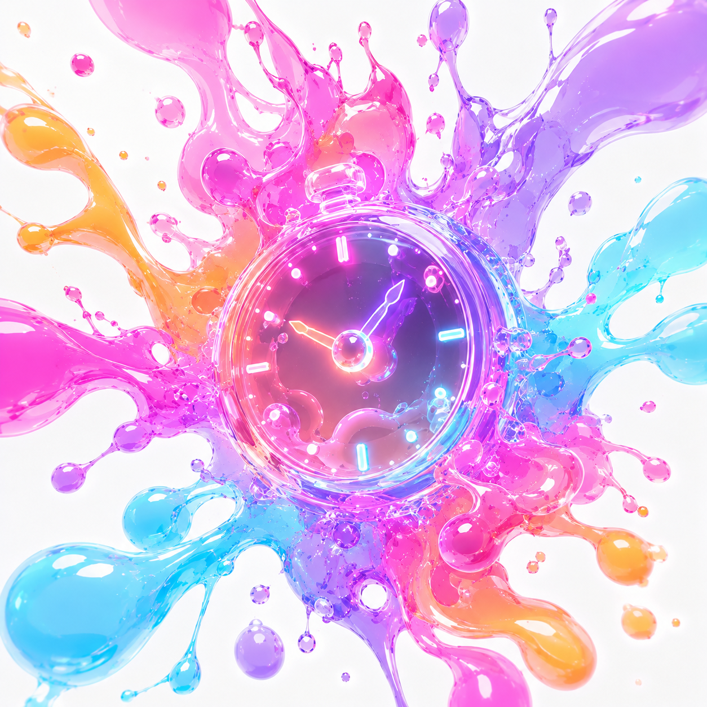

Liquid Focus
計測中 00:00
ホームウィジェット表示中
変更
日ごとの頑張り推移
ネオン液体の蓄積と達成ペース
総合時間（全スペース）
可視化スペース
0個
作業名
0.0h / 2.0h
0%
00:00:00
計測開始
+15m
計測中はしずくが落ちてネオンの液体がたまっていきます
週間推移グラフ
日ごとの蓄積量と達成ライン
スペース設定
作業名
1日の理想時間（時間）
ネオン液体の色
削除する
設定を保存
ウィジェット設定
新しいスペース
新しい可視化スペース
作業名（夢に向けた取り組み）
1日の理想時間（時間）
ネオン液体の色（自由に選択）
スペースを作成する
ウィジェット表示設定
ホーム画面でパッと目につく表示を選択
💡
総合時間
を選ぶと、全スペースの理想時間を合計した枠の中に、ネオン色の液体が
混ざらずに発光する層
として積み上がります。
メッセージ